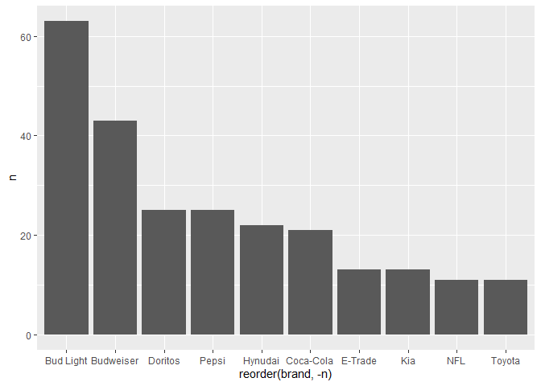

Tarea 1
Tarea 1
Febrero/MArzo 2021
Las tareas de este curso serán menos guiadas, pero tratarán de estimular de manera más intensa su creatividad para resolver problemas.
Por ejemplo, esta semana la idea es participar en la dinámica de #tidytuesday y compartir alguna visualización con la comunidad de internet. La base de esta semana (puedes ver el repositorio y el calendario aquí) se trata de los anuncios del Super Tazón.
Utiliza las bibliotecas que vimos en clase para hacer una visualición como más te guste.
Carga las bibliotecas.
Carga los datos y exploralos con
glimpse.
youtube <- readr::read_csv('https://raw.githubusercontent.com/rfordatascience/tidytuesday/master/data/2021/2021-03-02/youtube.csv')##
## -- Column specification -----------------------------------------
## cols(
## .default = col_character(),
## year = col_double(),
## funny = col_logical(),
## show_product_quickly = col_logical(),
## patriotic = col_logical(),
## celebrity = col_logical(),
## danger = col_logical(),
## animals = col_logical(),
## use_sex = col_logical(),
## view_count = col_double(),
## like_count = col_double(),
## dislike_count = col_double(),
## favorite_count = col_double(),
## comment_count = col_double(),
## published_at = col_datetime(format = ""),
## category_id = col_double()
## )
## i Use `spec()` for the full column specifications.¿Qué observas de la base?, ¿qué datos te podrían servir para graficar algo?
Hay un grupo de variables dicotómicas que permite observar el principal característica de cada comercial, ¿cómo podrías usarlo?
- Planea tu gráfica. En una hoja de papel o lienzo de paint dibuja cómo imaginas tu gráfica.
Algunas ideas:
- ¿Cuál es la empresa que más comerciales ha tenido para el medio tiempo del Súper Bowl?
conteo_marca <- youtube %>%
count(brand) %>%
arrange(-n)
ggplot(conteo_marca,
aes(x=reorder(brand, -n),
y=n)) +
geom_col()
- ¿Qué empresa ha tenido más vistas a través de los años?
vistas <- youtube %>%
group_by(brand) %>%
summarise(vistas_totales = sum(like_count, na.rm=T))
ggplot(vistas,
aes(x=brand,
y=vistas_totales/1000)
) +
ggalt::geom_lollipop()
¿Cuál es la empresa más odiada? Puedes hacer una variable con
mutateque de el total de likes menos dislikes, agrupar por marca, sumarizar el promedio de ese número y graficarla con ungeom_col.¿El uso de sexo para vender se ha acentuado con los años? Al ser dicotómica, la variable
use_sexpuede ser sumada como un número. Utiliza esa característica para sumar el número de comerciales que tienen como tema principal el sexo para vender agrupados por años. Grafica con una línea.
Recuerda que puedes usar facet_wrap() o una animación para aprovechar la variable “year”-
- Usa
theme()o alguno de los temas precargados para modificar lo que no te guste y añade laslabs()necesarias.